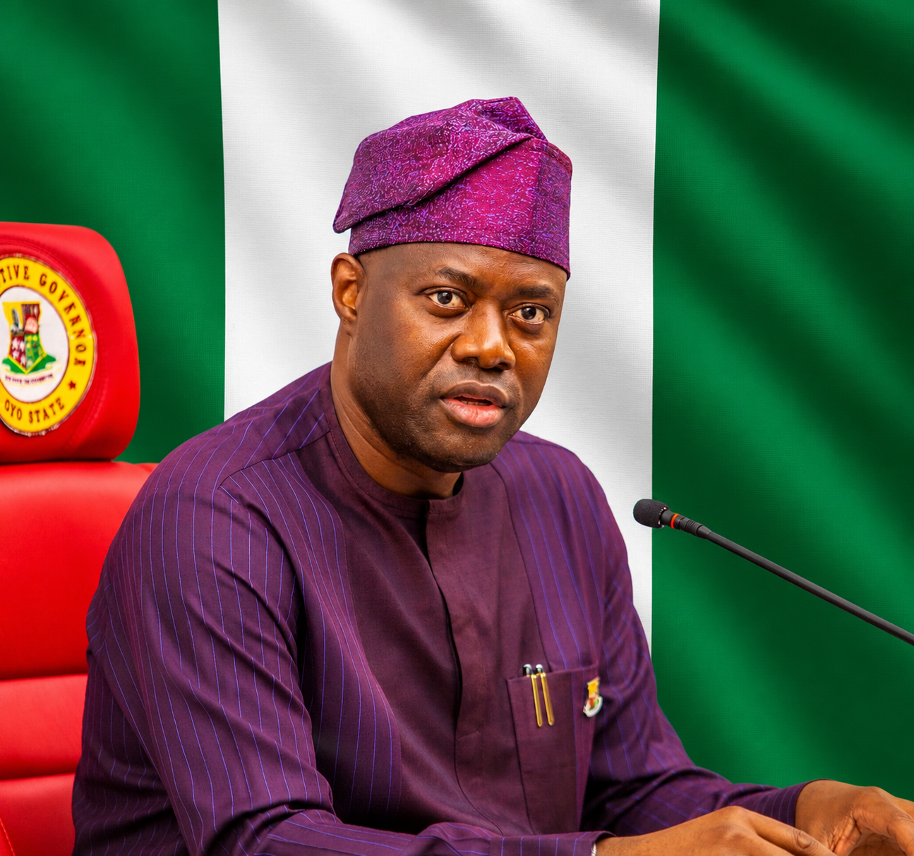
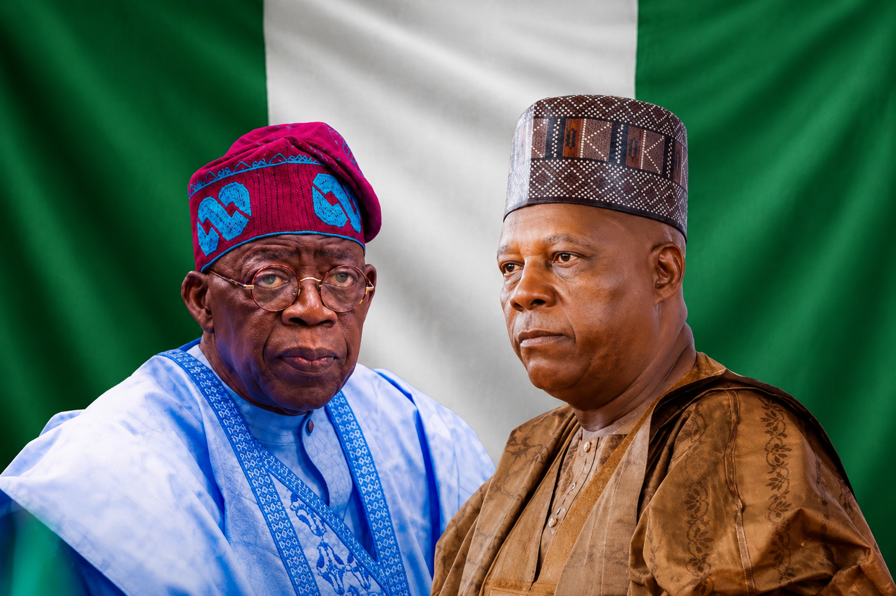

Should Argentina Let Someone Else Take Penalties Instead of Messi?
GOFOCUS Sports | July 2026
Lionel Messi continues to prove why many consider him the greatest footballer of all time. The Argentina captain has once again inspired his team with brilliant performances at the 2026 FIFA World Cup.
Against Egypt in the Round of 16, Messi scored one goal and provided an assist as Argentina fought back from two goals down to secure a dramatic victory.
He also became the oldest player to score and assist in a World Cup match while extending his record as the tournament's all-time leading assist provider.
Despite his outstanding displays, one debate continues among football fans—should Messi remain Argentina's penalty taker?
Some supporters believe another specialist should take penalties to improve Argentina's chances in crucial moments. Others argue Messi has earned the responsibility because of his leadership, experience, and ability to perform under pressure.
As Argentina continues its World Cup campaign, the discussion is far from over. Should Lionel Messi keep taking penalties, or is it time for another player to step up?
What do you think? Share your opinion in the comments.
Makinde Questions Timing of School Kidnapping After 2027 Presidential Declaration

Published: July 11, 2026
Oyo State Governor and Allied Peoples Movement (APM) presidential candidate,
Seyi Makinde, has raised concerns over the timing of the recent abduction of
pupils and teachers in Oriire Local Government Area.
According to reports, Makinde said the incident occurred shortly after he
announced his intention to contest the 2027 presidential election. Speaking
during a meeting with Bauchi State Governor Bala Mohammed and APM leaders in
Bauchi, he described the timing as unusual.
The governor noted that Oyo State had not witnessed a similar attack during his
years in office and called for a thorough investigation into the incident. He
also urged security agencies to intensify efforts to rescue the victims and
bring those responsible to justice.
The incident has generated public concern and renewed discussions about
security as political activities ahead of the 2027 elections continue.
Source: Nigerian Tribune
APC Chieftain: Retaining Shettima Is Tinubu's Strongest Political Move Ahead of 2027
Published by: GOFOCUS Entertainment
Date: July 11, 2026

A senior stakeholder of the All Progressives Congress (APC) in Kano State...
Tinubu’s Decision to Retain Shettima Wins Praise from APC Stakeholder Ahead of 2027
By GOFOCUS Entertainment | July 11, 2026
A prominent stakeholder of the All Progressives Congress (APC) in Kano State, Musa Illiyasu Kwankwaso, has applauded President Bola Ahmed Tinubu's decision to retain Vice President Kashim Shettima as his running mate for the 2027 presidential election.
Kwankwaso described the move as a strategic political decision that is expected to strengthen the APC's chances, particularly across Northern Nigeria. According to him, keeping Shettima on the ticket reinforces the party's unity and boosts confidence among supporters ahead of the next general election.
The APC chieftain, who serves as the Director of Finance at the Hadejia Jama'are River Basin Development Authority, stated that the decision has significantly improved the party's electoral prospects and would help consolidate its support base throughout the region.
In a statement personally signed and made available to journalists, Kwankwaso noted that the President's choice has effectively ended speculation surrounding the vice-presidential position and sent a clear message of continuity, stability, and confidence within the ruling party.
He maintained that the Tinubu-Shettima partnership remains a strong political combination capable of sustaining the APC's influence as preparations for the 2027 presidential election continue.